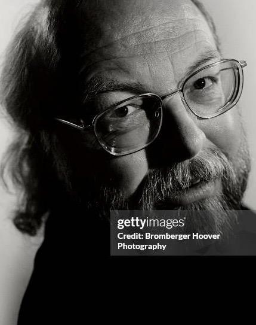

19/05/1955
JAMES
GOSLING
Científico de la computación

James Gosling 2019.
CREADOR DE JAVA
"Write once, run anywhere"
BIOGRAFÍA
James Gosling, conocido como el "Padre de Java,"
es un reconocido científico informático e ingeniero
de software canadiense. Nació el 19 de mayo de
1955 en Calgary, Alberta, Canadá. Es mundialmente
conocido por liderar el desarrollo del lenguaje de
programación Java, que ha tenido un impacto significativo
en la tecnología, la informática y el desarrollo de software.
James Gosling 2019.
OBRAS Y ACTOS
más importantes
CREACIÓN
DE JAVA
Lideró la creación de Java, un lenguaje de programación orientado a objetos diseñado
para ser independiente de la plataforma.
DESARROLLO
DE SOFTWARE
Reconocido por contribuir al diseño de
sistemas distibuidos y herramientas de
desarrollo de software.

PREMIOS
Recibió numerosos premios, incluyendo
ser nombrado Miembro de la Academia Nacional de Ingeniería de EE.UU en 2002.
ACONTECIMIENTOS
MÁS IMPORTANTES
- En 1984, Gosling se unió a Sun Microsystems,
donde fue
vicepresidentes hasta que Oracle compró la empresa en 2010. - En 2002, Gosling recibió el Premio a la Innovación Economista.
- En 2007, Gosling fue nombrado Oficial de la Orden de Canadá,
el segundo más alto honor civil de Canadá. - Después de dejar Sun Microsystems, Gosling se convirtió en Jefe
de Arquitectura de Software en Liquid Robotics.
○
○
○
○
James Gosling 1999.
DATOS
CURIOSOS
- Estudio ciencias en la Universidad de Calgary en 1977.
- Mientras trabajaba para su doctorado, escribío una
versión de Emacs. - Antes de uirse a Sun Microsystems construyó una version
multiproceador de Unix. - Fue vicepresidente de la compañia Sun Microsystems hasta
que fue comprada en 2010 por Oracle.
○
○
○
○